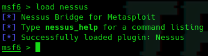
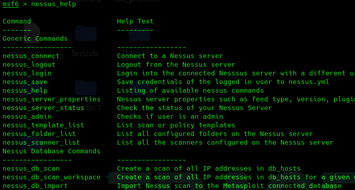
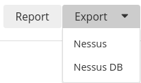
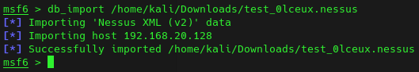
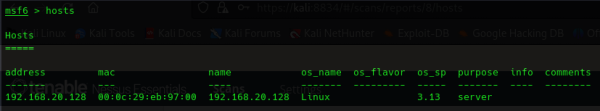
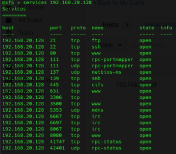
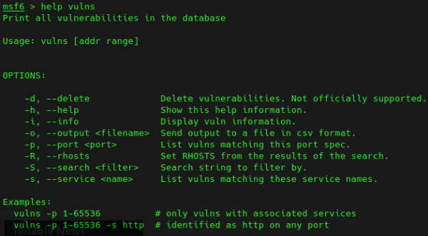
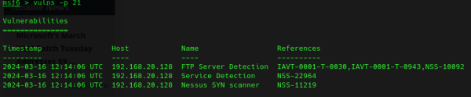
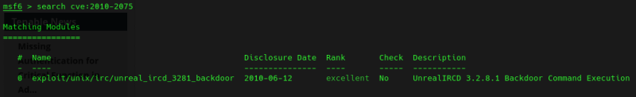

Podemos usar la integración de nessus con metasploit.
Iniciamos nessus y abrimos msfconsole.
Podemos directamente realizar todos los escaneos, establecer políticas, etc desde la consola de metasploid utilizando el plugin nessus
load nessus


Desde la interfaz de nessus podemos coger el resultado de un análisis y lo podemos exportar como nessus.

Los importamos en msfconsole:
db_import /home/kali/Downloads/test_0lceux.nessus

Ahora nosotros podemos interactuar con la base de datos de metasploit para ver la información del escaneo.
hosts

services 192.168.20.128

help vulns

vulns -p 21
vulns 192.168.20.128

Con esto directamente podemos buscar el CVE en metasploit:
search cve:2010-2075
